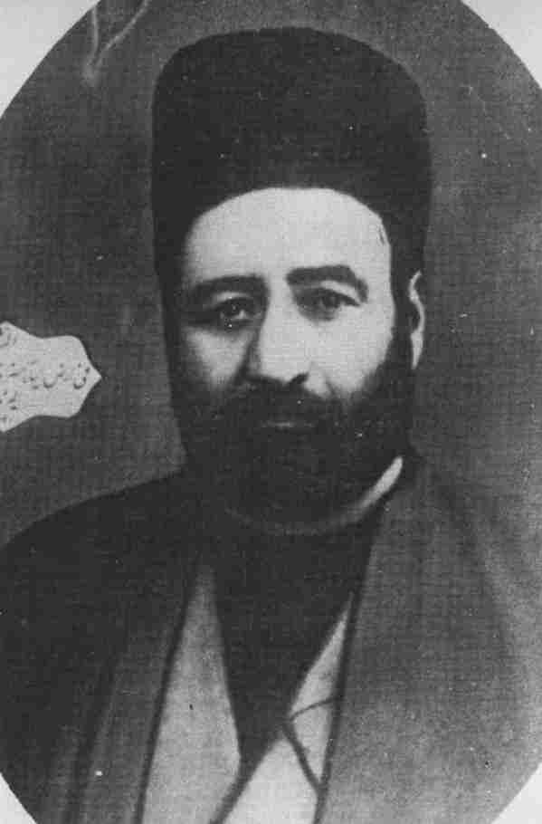

The Day of GodTajallíyát Ustád 'Alí-Akbar-i-Banná The Tablet of Tajallíyát* was revealed after the Kitáb-i-Aqdas around the year AH 1303 (AD 1885-6) in honour of Ustád 'Alí-Akbar-i-Banná (builder-architect),† a native of Yazd, a believer of staunch faith and devotion and one who at the end laid down his life in the path of His Lord. He was a building contractor of wide repute, well respected in government circles, and he was often engaged in construction work for the Governor of Yazd and other high-ranking officials. When Ustád 'Alí-Akbar embraced the Cause he became filled with the spirit of faith. His soul was illumined by his intense love for Bahá'u'lláh, and he became a shining light among the members of the Bahá'í community of Yazd. His dedication to the Cause and enthusiasm for teaching it aroused the passions of the fanatical clergy who wrote his death warrant. This was in the year AH 1295 (AD 1878) when Nabíl-i-Akbar‡ had gone on a visit to Yazd. The Governor, who was on friendly terms with Ustád 'Alí-Akbar, advised both men to leave the city immediately for |
* This Tablet has been translated in full into English and published in Tablets of Bahá'u'lláh, pp. 47-54. † In the old days in Persia there were no colleges or universities in which students might graduate in the fields of science, art or technology. Those who were described as 'builder-architects' had learned their trade through practical experience working as apprentices to the great master-builders of the time. ‡ see above, ch. 3. [Tajallíyát] God Passes By, p. 216 |
|
|
their safety. They went to Isfahán, stayed a few days in the home of the King of the Martyrs and Beloved of the Martyrs and then Ustád went to Tihrán while Nabíl-i-Akbar remained in Isfahán. Ustád 'Alí-Akbar was so dedicated to the Cause that he could never withhold himself from teaching the Faith. Although he was a stranger in Tihrán, he succeeded in teaching some individuals who were enabled to embrace the Cause. He stayed nine months in the capital before returning to his native city of Yazd. On his return, the enemies of the Faith began agitating the authorities in the hope of taking his life. The clergy again issued his death warrant and handed it to the Governor for execution. But his qualities of service and loving-kindness had endeared him to the authorities and high-ranking officials, who extended their protection to him. However, his life was still in danger, for having failed to put him to death officially, his enemies plotted assiduously to assassinate him. For several years he was the target of many an intrigue, but the Almighty protected him for greater tasks ahead. During this time he succeeded in guiding many souls to the Cause of God. It must be remembered that during the Heroic Age of the Faith all the believers lived and laboured under very dangerous conditions. The male members of the Bahá'í community were in greater danger than the female, because in those days women lived a secluded life and did not as a general rule appear in public. Any man who was a Bahá'í could not be sure when he left his home in the morning that he would be alive to return home in the evening. This was especially true if the individual was an educated person and an active teacher of the Cause. Ustád 'Alí-Akbar certainly was one of these. During the few years that he remained in Yazd many incidents took place which were fraught with danger. Eventually, after consultation with the Afnáns,* it was decided that Ustád 'Alí-Akbar should go to 'Ishqábád. He arrived there in the year AH 1301 (AD 1883-4).
|
* see above, p. 50n. In the absence of spiritual assemblies, Bahá'í teachers, or the Afnáns, or Bahá'ís with deeper knowledge of the Faith took counsel together on the affairs of the community. |
|
|
For some time a few members of the Afnán family had taken great interest in 'Ishqábád. Hájí Mírzá Muhammad-'Alí, a maternal cousin of the Báb, had purchased some properties in that city on the advice of his younger brother Hájí Mírzá Muhammad-Taqí* who was then living in Yazd. When the news of this purchase was communicated to Bahá'u'lláh, He ordered that a certain plot of land purchased from a person called A'zam should be set aside for the building of a Mashriqu'l-Adhkár in 'Ishqábád. This was done and later the first Bahá'í House of Worship in the world was erected on that site.† For about two years Ustád 'Alí-Akbar was engaged in building shops, a caravanserai and houses for the Afnáns. He then received permission from Bahá'u'lláh to go on pilgrimage to 'Akká. He attained the presence of Bahá'u'lláh in AH 1303 (AD 1885-6). His coming in contact with the Supreme Manifestation of God left an abiding impression on this devoted believer. The fire of the love of Bahá'u'lláh, already burning within his heart, was fanned into a mighty flame as a result of this pilgrimage, He returned to 'Ishqábád radiating the light of the Faith to all souls whom he met. These are the words of Bahá'u'lláh as He addresses Ustád 'Alí-Akbar in the Tablet of Tajallíyát:
We testify that thou hast set thy face towards God and travelled far until thou didst attain His presence and gavest ear unto the Voice of this Wronged One, Who hath been cast into prison through the misdeeds of those who have disbelieved in the signs and testimonies of God and have denied this heavenly grace through which the whole world hath been made to shine. Blessed thy face, for it hath turned unto Him, and thine ear, for it hath heard His Voice, and thy tongue, for it hath celebrated the praise of God, the Lord of lords. We pray God to graciously aid thee to become a standard for the promotion of His Cause and to enable thee to draw nigh unto Him at all times and under all conditions.1 |
* For a brief account of his life see vol. 1, pp. 198-201. † Mashriqu'l-Adhkár: literally, 'the Dawning-place of the Mention of God'. Unfortunately the building was damaged as a result of an earthquake in 1963 and had to be demolished.
1. Tablets of Bahá'u'lláh, p. 49. |

The recipient of the Tablet of Tajallíyát |
|
In 'Ishqábád, Hájí Mírzá Muhammad-'Alí, the cousin of the Báb, financed the construction of a two-storey building on the corner of the land which he had purchased from A'zam and which had been set aside by Bahá'u'lláh's direction as a site for the future Mashriqu'l-Adhkár. Ustád 'Alí-Akbar constructed the building, which was dedicated as a Bahá'í centre in the year AH 1305 (AD 1887-8). All Bahá'í activities, such as meetings and receptions, were held in this building until some years later when the House of Worship was built through the dedicated and sacrificial efforts of Hájí Mírzá Muhammad-Taqí, a younger cousin of the Báb. Ustád 'Alí-Akbar went on pilgrimage to the Holy Land once again in AH 1311 (AD 1893-4) during the Ministry of 'Abdu'l-Bahá. It was on this occasion that under the direction of 'Abdu'l-Bahá, who conceived the plan for a nine-sided building, he designed the main features of the House of Worship which were approved by the Master. In his last Tablet to Ustád 'Alí-Akbar, 'Abdu'l-Bahá confirms that this design was drawn when Ustád was in the Holy Land, and asks him to send a few copies to one of the Hands of the Cause in Persia. It was, however, a Russian architect who planned and executed the details of the construction; this began in 1902 when the foundation stone was laid in a moving ceremony in the presence of the Czar's representative General Krupatkin, the Governor-General of Turkistán. Of the significance of this House of Worship and its historic importance, Shoghi Effendi, the Guardian of the Faith, writes:
More conspicuous than any of these undertakings,* however, was the erection of the first Mashriqu'l-Adhkár of the Bahá'í world in the city of 'Ishqábád, a center founded in the days of Bahá'u'lláh, where the initial steps preparatory to its construction, had been already undertaken during His lifetime. Initiated at about the close of the first decade of 'Abdu'l-Bahá's ministry (1902); fostered by Him at every stage in its |
* Referring mainly to the restoration of the House of the Báb and the establishment of schools by the Bahá'í community of Persia during the Ministry of 'Abdu'l-Bahá. (A.T.) |
|
development; personally supervised by the venerable Hájí Mírzá Muhammad-Taqí, the Vakílu'd-Dawlih, a cousin of the Báb, who dedicated his entire resources to its establishment, and whose dust now reposes at the foot of Mt. Carmel under the shadow of the Tomb of his beloved Kinsman; carried out according to the directions laid down by the Center of the Covenant Himself; a lasting witness to the fervor and the self-sacrifice of the Oriental believers who were resolved to execute the bidding of Bahá'u'lláh as revealed in the Kitáb-i-Aqdas, this enterprise must rank not only as the first major undertaking launched through the concerted efforts of His followers in the Heroic Age of His Faith, but as one of the most brilliant and enduring achievements in the history of the first Bahá'í century.2Ustád 'Alí-Akbar took a leading role in the building of the House of Worship. But God had other plans for him. Barely six months had passed from the laying of the foundation stone when he received a Tablet from 'Abdu'l-Bahá urging him to go on a visit to Yazd in the spring. He advised him not to hesitate or delay his departure. Ustád 'Alí-Akbar immediately arranged his affairs and in the spring of 1903, after twenty years of absence, he arrived in his native city. His arrival coincided with a period of unusual activity by the Bahá'ís of Yazd. Some well-known teachers of the Cause were coming and going, and the Bahá'ís were very active in teaching the Faith. The arrival of Ustád 'Alí-Akbar in particular created a stir among the non-Bahá'ís, who circulated rumours that he was about to build a Bahá'í House of Worship in Yazd. The people who lived in his neighbourhood were particularly angry, because over the years he had succeeded in converting many souls to the Faith in that area. In the meantime, 'Abdu'l-Bahá despatched Jináb-i-Ibn-i-Abhar, one of the Hands of the Cause, to Yazd with a special mission. Some large gatherings were held and Ibn-i-Abhar aroused the believers to great heights of spirituality and particularly prepared them for martyrdom should the occasion arise. Consequently a great many souls stood ready to sacrifice |
2. God Passes By, p. 300. |
|
|
their lives in the path of God. This was the summer of 1903, a few months after the arrival of Ustád 'Alí-Akbar. Ibn-i-Abhar left Yazd; he had hardly reached a neighbouring town when suddenly a great uprising against the Bahá'ís erupted in the city, which soon spread to several villages around Yazd. This was the greatest upheaval that had occurred in Persia during the Ministries of Bahá'u'lláh and 'Abdu'l-Bahá since the blood-bath of Tihrán after the attempt on the life of Násiri'd-Din Sháh in 1852. The upheaval within the city of Yazd lasted a few days. Every Bahá'í who could be found was put to death. A great many believers laid down their lives for the Cause of God in most moving circumstances. The History of the Martyrs of Yazd published in Cairo describes in detail the martyrdom of these souls. However, it is a well-known fact that few people have succeeded in reading this book all the way through; its heartrending stories are so piercing that most people stop reading after a few pages. Ustád 'Alí-Akbar was among those martyred. The first fatal shot was fired by one of his close relatives. He fell to the ground and shouted, 'Yá Bahá'u'l Abhá'! Then crowds of people attacked, smashed his head with a pickaxe, tied a rope to his feet and dragged his corpse through the city where hundreds of people hurled stones at it and inflicted blows upon it. His disfigured body was then lowered into a deep unused well on the outskirts of the city in which the bodies of other martyrs had been deposited. Thus ended the life of a believer who served the Cause of God with exemplary devotion and self-sacrifice. Although he had only an elementary education, he is the author of some beautiful poems and a book on proofs of the Faith (unpublished). He also wrote a detailed account of the early days of the Faith in 'Ishqábád which has not as yet been published. His achievements in the teaching field were truly outstanding. According to his own testimony written about two years before his martyrdom, three hundred souls embraced the Cause of God as a direct result of his teaching work. Ustád 'Alí-Akbar was certainly one of the favoured ones of God; Bahá'u'lláh has revealed twenty-seven |
||
|
Tablets in his honour. 'Abdu'l-Bahá also honoured him with many Tablets. When Ustád 'Alí-Akbar received the Tablet of Tajallíyát he was particularly fascinated by it, as Bahá'u'lláh had sent him pages of 'revelation-writing' along with the text of the Tablet. When Tablets were revealed, Mírzá Áqá Ján, Bahá'u'lláh's amanuensis, usually took them down. But the speed of revelation was so fast that his handwriting, known as revelation-writing, was practically illegible. We have discussed this subject more fully in a previous volume.* The Station of Bahá'u'lláh In the Tablet of Tajallíyát Bahá'u'lláh reveals a glimpse of the transcendent splendour of His Revelation. In a few passages He extols the Mission of its Author in such wise that some may find it difficult to appreciate. It is interesting to note that Bahá'u'lláh often repeats a certain subject in His Writings, but each time it is freshly revealed and expressed in a different way. One subject, however, appears more than any other in the Writings of Bahá'u'lláh: one can hardly come across a Tablet which does not expound the greatness of His Revelation and the exalted station of its Author. This recurring theme is the cornerstone of Bahá'u'lláh's Message to mankind. He constantly reiterates that He has ushered in the Day of God. For instance, the following utterances selected at random reveal this outstanding feature of His transcendent Revelation. These highly significant passages are the cause of supreme felicity and exhilaration for His loved ones who have truly recognized His station. On the other hand, the same passages may be misconstrued by those who are not endowed with true understanding, or by those motivated by malice. Indeed, many of Bahá'u'lláh's adversaries falsely accused |
* see vol. 1, ch. 3. For a facsimile of a page of the Tablet of Tajallíyát in revelation-writing see vol. 1, facing p. 110. |
|
|
him of identifying Himself with that Invisible Reality, the Essence of Deity itself.
Verily I say! No one hath apprehended the root of this Cause. It is incumbent upon every one, in this day, to perceive with the eye of God, and to hearken with His ear. Whoso beholdeth Me with an eye besides Mine own will never be able to know Me. None among the Manifestations of old, except to a prescribed degree, hath ever completely apprehended the nature of this Revelation.3 |
3. Bahá'u'lláh, quoted by Shoghi Effendi, The Advent of Divine Justice, p. 64. 4. ibid. p. 65. 5. ibid. p. 67. 6. ibid. p. 66. 7. ibid. 8. Bahá'u'lláh, quoted by Shoghi Effendi, 'The Dispensation of Bahá'u'lláh', in The World Order of Bahá'u'lláh, pp. 106-7. |
|
He it is*...Who in the Old Testament hath been named Jehovah, Who in the Gospel hath been designated as the Spirit of Truth, and in the Qur'án acclaimed as the Great Announcement...But for Him no Divine Messenger would have been invested with the robe of prophethood, nor would any of the sacred scriptures have been revealed. To this bear witness all created things.9In the Tablet of Tajallíyát Bahá'u'lláh acknowledges that the mere mention of His Station may cause people to become perturbed and filled with consternation. He intimates to the recipient of that Tablet that He would not have disclosed the exalted nature of His Station had it not been for the Báb who had repeatedly announced it in His Writings. These are the words of Bahá'u'lláh in the Tablet of Tajallíyát:
By the righteousness of God! But for the anthem of praise voiced by Him Who heralded the divine Revelation, this Wronged One would never have breathed a word which might have struck terror into the hearts of the ignorant and caused them to perish. Dwelling on the glorification of Him Whom God shall make manifest--exalted be His Manifestation--the Báb in the beginning of the Bayán saith: 'He is the One Who shall proclaim under all conditions, "Verily, verily, I am God, no God is there but Me, the Lord of all created things. In truth all others except Me are My creatures. O, My creatures! Me alone do ye worship."' Likewise in another instance He, magnifying the Name of Him Who shall be made manifest, saith: 'I would be the first to adore Him.' Now it behoveth one to reflect upon the significance of the 'Adorer' and the 'Adored One', that perchance the people of the earth may partake of a dewdrop from the ocean of divine knowledge and may be enabled to perceive the greatness of this Revelation. Verily, He hath appeared and hath unloosed His tongue to proclaim the Truth. Well is it with him who doth acknowledge and recognize the truth, and woe betide the froward and the wayward.10It is obvious that the great majority of the people at this time |
* Bahá'u'lláh. (A.T.)
9. Bahá'u'lláh, quoted by Shoghi Effendi, 'The Dispensation of Bahá'u'lláh', in The World Order of Bahá'u'lláh, p. 104. 10. Tablets of Bahá'u'lláh, p. 53. |
|
|
in history will not be able to accept Bahá'u'lláh's claims to such an exalted position. In the above passage He confirms that such a claim would strike 'terror into the hearts of the ignorant'. Even some of His followers whose hearts have been touched by His love but who have not had the opportunity to deepen themselves in the verities of His Faith and discover the inner significances of His Revelation may find themselves severely tested when they come across Bahá'u'lláh's utterances revealing some of the awe-inspiring features of His transcendent Revelation. They may be equally tested by the statement of the Báb, Himself a Manifestation of God, saying that He would be 'the first to adore' Bahá'u'lláh. The mind is bewildered when it attempts to contemplate the station of the 'Adorer'--the Báb, a Manifestation of God, the 'Primal Point', the 'King of Messengers', one 'round Whom the realities of the Prophets and Messengers revolve'. The 'Adored One' is Bahá'u'lláh, and it was noted in the above passage that the Báb describes Him as 'the One Who shall proclaim under all conditions, "Verily, verily, I am God, no God is there but Me, the Lord of all created things. In truth all others except Me are My creatures. O, My creatures! Me alone do ye worship."' The Writings of the Báb are replete with passages* such as this one. Bahá'u'lláh Himself in one of His Tablets11 makes a striking statement when He testifies that the Cause is so mighty that whenever His Pen moves to inscribe its greatness, it trembles and swoons away. This subject--the greatness of the Revelation of Bahá'u'lláh--has been discussed repeatedly in previous volumes, each time from a slightly different point of view. In this instance let us examine the main obstacles which may prevent the seeker of truth from appreciating the exalted nature of the Revelation of Bahá'u'lláh and the lofty station of its Author. These obstacles appear to be based on two misunderstandings. One is Bahá'u'lláh's identification with the Godhead. The other, the apparent contradiction between the belief that all the Manifestations of God are |
* For further information see vol. 1, ch. 18.
11. Unpublished compilation, National Archives Committee, no. 41, p. 4. |
|
|
one and the statement that Bahá'u'lláh is the supreme Manifestation of God. The relationship of God to His Manifestations As to the first question, we can do no better than to turn to Shoghi Effendi's explanation. He writes:
Let no one meditating...on the nature of the Revelation of Bahá'u'lláh, mistake its character or misconstrue the intent of its Author. The divinity attributed to so great a Being and the complete incarnation of the names and attributes of God in so exalted a Person should, under no circumstances, be misconceived or misinterpreted. The human temple that has been made the vehicle of so overpowering a Revelation must, if we be faithful to the tenets of our Faith, ever remain entirely distinguished from that 'innermost Spirit of Spirits' and 'eternal Essence of Essences'--that invisible yet rational God Who, however much we extol the divinity of His Manifestations on earth, can in no wise incarnate His infinite, His unknowable, His incorruptible and all-embracing Reality in the concrete and limited frame of a mortal being. Indeed, the God Who could so incarnate His own reality would, in the light of the teachings of Bahá'u'lláh, cease immediately to be God. So crude and fantastic a theory of Divine incarnation is as removed from, and incompatible with, the essentials of Bahá'í belief as are the no less inadmissible pantheistic and anthropomorphic conceptions of God--both of which the utterances of Bahá'u'lláh emphatically repudiate and the fallacy of which they expose...12It is essential to differentiate between the 'Essence of God' which Shoghi Effendi describes as the 'innermost Spirit of Spirits' or 'Eternal Essence of Essences', and 'God revealed' to humanity. The former is unknowable, while the latter is comprehensible to man. We note in the Writings of Bahá'u'lláh that the Manifestations of God do not have any knowledge of God's Essence. One can understand his own equal or an inferior being, but knowledge of a superior being is impossible. Therefore, if the |
12. 'The Dispensation of Bahá'u'lláh', in The World Order of Bahá'u'lláh, pp. 112-13. |
|
|
Manifestations of God were able to understand the Essence of Divinity they should be equal to Him, and this is blasphemy. In one of His Tablets Bahá'u'lláh has made a categorical statement that the Manifestations of God do not have any access to the Essence of God, that invisible Reality. These are His Words:
From time immemorial...He, the Divine Being, hath been veiled in the ineffable sanctity of His exalted Self, and will everlastingly continue to be wrapt in the impenetrable mystery of His unknowable Essence...Ten thousand Prophets, each a Moses, are thunderstruck upon the Sinai of their search at God's forbidding voice, 'Thou shalt never behold Me!'; whilst a myriad Messengers, each as great as Jesus, stand dismayed upon their heavenly thrones by the interdiction 'Mine Essence thou shalt never apprehend!' 13Bahá'u'lláh Himself has testified in many of His Tablets that He too has no knowledge or understanding of the innermost reality of God. In one instance He thus testifies:
How bewildering to me, insignificant as I am, is the attempt to fathom the sacred depths of Thy knowledge! How futile my efforts to visualize the magnitude of the power inherent in Thine handiwork--the revelation of Thy creative power! 14In one of His celebrated prayers Bahá'u'lláh refers to Himself as the Day-Spring of God's signs and the Revealer of His clear tokens. He also testifies to the immensity of His own wisdom and the loftiness of His knowledge. Nevertheless, the possessor of such an exalted station affirms that He is unable to know the innermost Essence of God. These words are part of His prayer as He communes with God:
I swear by Thy Beauty, O King of eternity Who sittest on Thy most glorious Throne! He Who is the Day-Spring of Thy signs and the Revealer of Thy clear tokens hath, notwithstanding the immensity of His wisdom and the loftiness of His knowledge, confessed His powerlessness to comprehend the least of Thine utterances, in their relation to Thy most exalted |
13. Quoted by Shoghi Effendi, 'The Dispensation of Bahá'u'lláh', in The World Order of Bahá'u'lláh, p. 113. 14. ibid. |
|
Pen--how much more is He incapable of apprehending the nature of Thine all-glorious Self and of Thy most august Essence! 15From these and many other Writings of Bahá'u'lláh we arrive at the conclusion that there can be no direct path or relationship between Him Who is the Essence of Divinity and all others, including His Manifestations. There is no door which could lead His creatures to His innermost Reality. We read in the Long Obligatory Prayer that He is far exalted above the reach of man's prayers.
Too high art Thou for the praise of those who are nigh unto Thee to ascend unto the heaven of Thy nearness, or for the birds of the hearts of them who are devoted to Thee to attain to the door of Thy gate. I testify that Thou hast been sanctified above all attributes and holy above all names. No God is there but Thee, the Most Exalted, the All-Glorious.16We note that God is 'sanctified above all attributes'. In many of His Tablets and prayers Bahá'u'lláh has testified that one cannot attach any attributes to the Essence of God. This can be easily appreciated, for any attribute which may be related to Him will have a limiting effect on Him, and consequently He will cease to be God. Those familiar with mathematics and the term 'infinity' know that it is impossible to evaluate it in terms of a number, however large. It would cease immediately to be 'infinity' if it were identified with any item other than itself. God is the infinite Being. The attributes 'the All-Knowing', the All-wise', 'the Incomparable' and others cannot be related to the Innermost Reality of God, His Essence. In a Tablet17 'Abdu'l-Bahá states that a great many people are bondslaves of vain imaginings. They confess that they worship God, but if they were asked which God they were worshipping, the response would be 'the God which comes to mind'. 'Abdu'l-Bahá then explains in this Tablet that whatever the individual can think about God in his mind is the fabric of his own imagination, and is not God. He emphasizes that the only way |
15. Prayers and Meditations, no. 176. 16. ibid. no. 183. 17. Má'idiy-i-Ásamání, vol. 9, p. 24. |
|
|
for one's mind to visualize God is to turn to His Manifestations. The explanations of 'Abdu'l-Bahá may be summarized by saying that the Infinite cannot be comprehended by man's finite mind. In another Tablet18 'Abdu'l-Bahá states that we may attach some attributes to God. We do this not because we wish to prove that God is the possessor of exalted attributes--attributes which are beyond our understanding--but rather to dissociate from Him the lack of such attributes. In his celebrated Tablet to Dr Forel, 'Abdu'l-Bahá states:
As to the attributes and perfections such as will, knowledge, power and other ancient attributes that we ascribe to that Divine Reality, these are the signs that reflect the existence of beings in the visible plane and not the absolute perfections of the Divine Essence that cannot be comprehended. For instance, as we consider created things we observe infinite perfections, and the created things being in the utmost regularity and perfection we infer that the Ancient Power on whom dependeth the existence of these beings, cannot be ignorant; thus we say He is All-Knowing. It is certain that it is not impotent, it must be the All-Powerful; it is not poor, it must be All-Possessing; it is not non-existent, it must be Ever-Living. The purpose is to show that these attributes and perfections that we recount for that Universal Reality are only in order to deny imperfections, rather than to assert the perfections that the human mind can conceive. Thus we say His attributes are unknowable.19God, Who in the Kingdom of His Own Self is exalted above any attribute, reveals Himself in His Kingdom of Revelation. It is in this Kingdom that all the attributes of God are manifested, and it is from this Kingdom that all the Manifestations are sent down. These embodiments of Holiness, the Manifestations of God, are the bearers of God's attributes. All the superlative attributes such as 'the Omnipotent', 'the All-Knowing', 'the All-glorious' and other similar attributes refer to God revealed to man. It may be noted in all the heavenly Books and in the Bahá'í Writings that the Manifestations of God, the Founders of world |
18. Amr Va Khalq, vol. 1 , p. 71. 19. Bahá'í World Faith, pp. 342-3. |
|
|
religions, are all the recipients of the Holy Spirit of God. And it is through the aid of the Holy Spirit that at each age they have revealed the attributes of God to Man. Bahá'u'lláh, as far back as His days in the Síyáh-Chál* of Tihrán, has categorically claimed that it was the 'Most Great Spirit' of God which was revealed to Him. And it is clear from the study of His Writings that it never left Him, and that He was animated and sustained throughout His Ministry by this 'Most Great Spirit'. In the Súriy-i-Haykal† Bahá'u'lláh affirms that the Holy Spirit revealed to the Manifestations of God has come into being through the agency of this 'Most Great Spirit', whatever that is. These are His words:
Naught is seen in My temple but the Temple of God, and in My beauty but His Beauty, and in My being but His Being, and in My self but His Self, and in My movement but His Movement, and in My acquiescence but His Acquiescence, and in My pen but His Pen, the Mighty, the All-Praised. There hath not been in My soul but the Truth, and in Myself naught could be seen but God. The Holy Spirit Itself hath been generated through the agency of a single letter revealed by this Most Great Spirit, if ye be of them that comprehend.20The Most Great Spirit is therefore the begetter of the Holy Spirit and the Revealer of God's attributes to man. Through it all Revelations have been sent down and all created things called into being. This 'Most Great Spirit' which has existed from eternity and which will exist for eternity had never before revealed Itself directly to mankind. God had waited for millions of years for man to develop spiritually and intellectually to a point where he could receive this Most Great Revelation. Bahá'u'lláh has declared that this was indeed God's purpose in creating man. In a Tablet He thus reveals:
The purpose underlying all creation is the revelation of this most sublime, this most holy Day, the Day known as the Day |
* Dungeon in Tihrán where Bahá'u'lláh was imprisoned. † see vol. 3, chapter 7.
20. Quoted by Shoghi Effendi, 'The Dispensation of Bahá'u'lláh', in The World Order of Bahá'u'lláh, p. 109. |
|
of God, in His Books and Scriptures--the day which all the Prophets and the Chosen Ones, and the holy ones, have wished to witness.21In past Dispensations God's Revelation had been indirect through the intermediary of the Holy Spirit. In this Dispensation, however, for the first time the Most Great Spirit of God has revealed Itself directly to Bahá'u'lláh and ushered in the Day of God. The most important point which can help clarify any misunderstanding about the station of Bahá'u'lláh is the dissociation of His human temple from the 'Most Great Spirit' which animated it. When we refer to Bahá'u'lláh, we are referring to the 'Glory of God', the 'Most Great Spirit' and not to a human being. When He speaks, the words are not His. They issue from the 'Most Great Spirit' which speaks in the language of man through a mouthpiece--the Person of Bahá'u'lláh. We often come across the words of Bahá'u'lláh saying 'I am God'. In many instances He declares that all creation has come into being through one of His words, or announces that He has sent all the Messengers in the past. The following passage is a typical example.
But for Him {Bahá'u'lláh} no Divine Messenger would have been invested with the role of prophethood.22None of these utterances come from the Person of Bahá'u'lláh. They represent the Voice of God which speaks to us through the instrumentality of a human being. Bahá'u'lláh Himself has expressed this phenomenon in these words:
When I contemplate, O my God, the relationship that bindeth me to Thee I am moved to proclaim to all created things 'verily I am God!'; and when I consider my own self, lo, I find it coarser than clay!23From all these explanations one may conclude that the greatness of the Revelation of Bahá'u'lláh and His transcendent glory is due to the Manifestation of the 'Most Great Spirit' which revealed itself directly to Him. Never before had God sent a |
21. Quoted by Shoghi Effendi, The Advent of Divine Justice, p. 65. 22. Quoted by Shoghi Effendi, 'The Dispensation of Bahá'u'lláh', in The World Order of Bahá'u'lláh, p. 104. 23. ibid. p. 113. |
|
|
Manifestation of His 'Most Great Spirit' to mankind, His Supreme Manifestation, or the Universal Manifestation Who appeared in His Greatest Name, Bahá (Glory). Shoghi Effendi, the Guardian of the Faith, has given the following explanation through his secretary:
By Greatest Name is meant that Bahá'u'lláh has appeared in God's Greatest Name, in other words, that He is the Supreme Manifestation of God...There are no Prophets, so far, in the same category as Bahá'u'lláh, as He culminates a great cycle begun with Adam.24Although one must distinguish between the Spirit which animated Bahá'u'lláh and His own Person, and be on one's guard not to attribute the glory of His Revelation to His human frame, it is nevertheless clear that the Person of the Manifestation cannot be dismissed altogether. On the contrary, the human temple which becomes the carrier of such a mighty Spirit moves and acts with the majesty and authority of God. The overwhelming and all-pervasive power of God is so infused into every atom of His Being that in every action He portrays the signs and tokens of divine power. Those endowed with spiritual insight can see in every move of the Manifestation of God, the attributes of God unmistakably apparent. His thoughts. His words, His actions are all motivated not by a human soul but by the Divine Spirit. Hájí Mírzá Haydar-'Alí, to whom much reference has been made in this and previous volumes, has described his own observations of Bahá'u'lláh in these words:
His blessed person appeared in the form of a human being, but His very movements, His manners, His way of sitting or standing, eating or drinking, even His sleep or wakefulness, were each a miracle to me. Because His perfections, His exalted character, His beauty, His glory, His most excellent titles and most august attributes revealed to me that He was peerless and without parallel. He was matchless with no one to |
* For further discussion of the term 'Universal Manifestation' see vol. 1, pp. 309-11.
24. Letters from the Guardian to Australia and New Zealand, p. 41. |
|
join partners with Him, unique with no peer or equal, the One and Single without a deputy...I saw a Person Who, from the human point of view, was like the rest of humanity. However, if one were to add the love, mercy and compassion of all the peoples of the world together, they would appear as a drop when compared with the ocean of His tender mercy and loving-kindness. I even seek God's forgiveness for making such a comparison. Similarly, if one brought together all the knowledge of science, crafts, philosophy, politics, natural history and divinity possessed by mankind, it would seem, in comparison with His knowledge and understanding, as an atom compared to the sun. If one weighed the might and power of kings, rulers, Prophets and Messengers against His omnipotence and sovereignty, His grandeur and glory, His majesty and dominion, they would be as insignificant as a touch of moisture compared with the waters of the sea...As I observed every one of His attributes, I discovered my inability to emulate Him, and realized that all the peoples of the world will never be able to attain to His perfections.25The dawn of the new age The other cause of misunderstanding about the station of Bahá'u'lláh is the apparent contradiction between His being the 'Supreme Manifestation', and the principle of the equality and oneness of all the Manifestations. To appreciate this point the reader would be well advised to study the Kitáb-i-Íqán, in which Bahá'u'lláh explains that the difference between the Manifestations lies in the intensity of their Revelations. We have also discussed this matter in detail in a previous volume.* In the Tablet of Tajallíyát Bahá'u'lláh reveals the following:
God testifieth that there is none other God but Him and that He Who hath appeared is the Hidden Mystery, the Treasured Symbol, the Most Great Book for all peoples, and the Heaven of bounty for the whole world. He is the Most Mighty Sign amongst men and the Dayspring of the most august attributes in the realm of creation. Through Him hath appeared that |
* see vol. 1, pp. 64-6 and 118-19.
25. Bihjatu's-Sudúr, pp. 72-3. [The Supreme Manifestation of God] Prayers and Meditations, p. 128, p. 275; The Revelation of Bahá'u'lláh, vol. 4 p. 406 |
|
which had been hidden from time immemorial and been veiled from the eyes of men. He is the One Whose Manifestation was announced by the heavenly Scriptures, in former times and more recently. Whoso acknowledgeth belief in Him and in His signs and testimonies hath in truth acknowledged that which the Tongue of Grandeur uttered ere the creation of earth and heaven and the revelation of the Kingdom of Names. Through Him the ocean of knowledge hath surged amidst mankind and the river of divine wisdom hath gushed out at the behest of God, the Lord of Days.26The Revelation of Bahá'u'lláh has endowed the human race with new capacity and bestowed upon it immense potentialities. In the above passage Bahá'u'lláh asserts that through Him has 'appeared that which had been hidden from time immemorial and been veiled from the eyes of men'. As we look back upon the progress of humanity throughout the ages we can clearly see that the advent of every Manifestation of God has coincided with a time when the older Dispensation had come to its end* and was enveloped in darkness. But the Dispensation of Bahá'u'lláh is different in that it has brought to light all that was hidden from man because of his lack of capacity in the past. The dawn of this new age coincided with the advent of the Báb and Bahá'u'lláh. This phenomenon is similar to the appearance of the dawn banishing the darkness of the night. During the night no one can see and all is dormant, but at the break of day eyes begin to see and everything comes to light. The dawn of this new era, which occurred in the middle of the nineteenth century at the appearance of the Báb, caused the minds and hearts of people to be illumined. The masses of the people, who in olden days followed their leaders almost blindly, were now able to see for themselves and think independently. The night season had passed and the morning light had dawned. As this process of enlightenment continued, people viewed life and all that pertains to it with a critical eye. A multiplicity of ideas resulted in the |
* see below, pp. 155-6.
26. Tablets of Bahá'u'lláh, p. 47. |
|
|
clash of differing opinions. Hundreds of sects were created in religions and many left religion altogether and swelled the ranks of agnostics and atheists. Many contrasting political and social systems were created and many controversial philosophies were introduced and established throughout the world. These divisive developments in the fields of religion, politics and social affairs are threatening to plunge the human race into a deep and dangerous abyss. On the other hand, there has occurred such an explosion of arts and sciences in this new era as bids fair to usher in an age in which spiritual and material forces will combine together to bring about a new civilization which will be well-balanced and world-embracing. These manifestations of human activity, with all their constructive as well as destructive consequences, are unprecedented in the annals of the past and owe their origins to the dawning of the Sun of Truth in this new age. Although the human world has been illumined in this day, the generality of mankind has not been able to find the source of this illumination. Returning to our analogy of the dark night and the appearance of the dawn, we can see a striking similarity between the plight of humanity today and the fate of those who are confined in their rooms when the dawn appears. They can witness the area brightening, but may fail to see the sun because of closed doors and drawn curtains. The veils that shut people out from the Sun of Truth are many and varied. The veil of knowledge, of pride and vainglory, of time-honoured traditions to which people usually become bondslaves, of various forms of prejudice, of religious indoctrination and many more--all these veils act as barriers for man and prevent him from recognizing the Revelation of Bahá'u'lláh as the Source of a revolutionizing process which is at work in the world of humanity in this age. Only by the lifting of these 'veils' and through an earnest search for truth can the individual become assured in his heart that Bahá'u'lláh, and no one else, has ushered in this revolutionizing process to which He Himself testifies in these words from the Kitáb-i-Aqdas:
|
||
The world's equilibrium hath been upset through the vibrating influence of this most great, this new World order. Mankind's ordered life hath been revolutionized through the agency of this unique, this wondrous System--the like of which mortal eyes have never witnessed.27Recognition and Steadfastness In the Tablet of Tajallíyát Bahá'u'lláh states that no one can recognize God save through Him. Statements such as these are to be found in many of His Writings. These are His words in this Tablet:
The first Tajallí which hath dawned from the Day-Star of Truth is the knowledge of God--exalted be His glory. And the knowledge of the King of everlasting days can in no wise be attained save by recognizing Him Who is the Bearer of the Most Great Name. He is, in truth, the Speaker on Sinai Who is now seated upon the throne of Revelation. He is the Hidden Mystery and the Treasured Symbol. All the former and latter Books of God are adorned with His praise and extol His glory. Through Him the standard of knowledge hath been planted in the world and the ensign of the oneness of God hath been unfurled amidst all peoples. Attainment unto the Divine Presence can be realized solely by attaining His presence. Through His potency everything that hath, from time immemorial, been veiled and hidden, is now revealed. He is made manifest through the power of Truth and hath uttered a Word whereby all that are in the heavens and on the earth have been dumbfounded, except those whom the Almighty was pleased to exempt. True belief in God and recognition of Him cannot be complete save by acceptance of that which He hath revealed and by observance of whatsoever hath been decreed by Him and set down in the Book by the Pen of Glory.28The 'Bearer of the Most Great Name', the 'Speaker on Sinai', the 'Hidden Mystery' and the 'Treasured Symbol' mentioned in the above passage all refer to Bahá'u'lláh. One of the basic teachings of Bahá'u'lláh is that man can never know God directly.
|
27. Synopsis, p. 27, also in Gleanings, LXX. 28. Tablets of Bahá'u'lláh, p. 50.
["The world's equilibrium..."] The Kitáb-i-Aqdas, ¶181; Gleanings From The Writings Of Bahá'u'lláh, LXX |
|
|
The only way open to him to know God is through knowing His Manifestations. Bahá'u'lláh has fully expounded this subject in the Kitáb-i-Íqán, and we have referred to it in a previous volume.* Similarly, 'attainment unto the Divine presence', which Bahá'u'lláh testifies to be none other than attaining His Own presence, is also discussed previously.† It is interesting to note Bahá'u'lláh's statement that He 'uttered a Word whereby all that are in the heavens and on the earth have been dumbfounded'. In another Tablet He makes a similar statement and reveals that the word in question is the changing of 'He' into 'I'. Again this statement has been referred to and explained in a previous volume.‡ Another subject to which Bahá'u'lláh has attached great importance in His Writings is that of steadfastness in the Cause of God. These are His words in the Tablet of Tajallíyát:
The second Tajallí is to remain steadfast in the Cause of God--exalted be His glory--and to be unswerving in His love. And this can in no wise be attained except through full recognition of Him; and full recognition cannot be obtained save by faith in the blessed words: 'He doeth whatsoever He willeth.' Whoso tenaciously cleaveth unto this sublime word and drinketh deep from the living waters of utterance which are inherent therein, will be imbued with such a constancy that all the books of the world will be powerless to deter him from the Mother Book. O how glorious is this sublime station, this exalted rank, this ultimate purpose! 29The Cause of God has been steadily growing since its inception. It has been, and still is, subjected to continuous opposition and harrowing persecutions. That it has survived, and indeed flourished, in spite of encountering many grievous upheavals in the course of its history, is partly due to the protection vouchsafed to it by the Almighty God, and partly to the steadfastness of its adherents. The heroic spirit of self-sacrifice |
* see vol. 1, pp. 175-80. ‡ see vol. 1, p. 46.
29. Tablets of Bahá'u'lláh, p. 51. |
|
|
demonstrated by thousands of its martyrs, its saints and scholars, its teachers and administrators, is indicative of an unshakeable faith and certitude unprecedented in the annals of religion. If it were not for the steadfastness of the followers of the Báb and Bahá'u'lláh in the face of brutal attacks and persecutions, the Bahá'í community could not have won such remarkable victories within so short a period of time. The steadfastness of a believer depends upon the extent to which he has recognized the station of Bahá'u'lláh. Those who have truly reached the pinnacle of faith and certitude have become so steadfast in the Cause of God as to fulfil the conditions for steadfastness that Bahá'u'lláh has laid down in the Tablet of Ahmad:*
And be thou so steadfast in My love that thy heart shall not waver, even if the swords of the enemies rain blows upon thee and all the heavens and the earth arise against thee.It is interesting to note that in the same Tablet Bahá'u'lláh has made the following promise:
By God! Should one who is in affliction or grief read this Tablet with absolute sincerity, God will dispel his sadness, solve his difficulties and remove his afflictions.People often wonder how to recite this Tablet with absolute sincerity. It may be said that reading with absolute sincerity takes place when the reader can truly reach to such heights of faith and assurance that 'his heart shall not waver, even if the swords of the enemies rain blows upon him'. In one of His Tablets30 Bahá'u'lláh states that a person will become steadfast in the Cause when he is absolutely assured in his heart that he does not need to turn to any religion other than this Most Great Revelation. One of the teachings of Bahá'u'lláh is the unfettered search after truth. Some misunderstand this important teaching to mean that even after discovering the Truth in the Revelation of |
* For further information see vol. 2, ch. 5.
30. Ishráqát, p. 196. |
|
|
Bahá'u'lláh and recognizing Him as the Manifestation of God, one ought to continue the search, perchance one may find it elsewhere. To hold such a view is a clear indication that the person has not discovered the truth in the first place and has not reached the stage of assurance in his faith. On the other hand, having found the truth, one never reaches the end of his journey; for as long as one lives there is scope for a better and deeper understanding of the truth he has found. In The Seven Valleys Bahá'u'lláh describes how the wayfarer passes from one stage to another. It begins with the Valley of Search when the individual seeks to find the Truth. When he discovers the object of his search he moves forward to other valleys, the Valleys of Love, of Knowledge and the rest. To remain in the Valley of Search for ever is an evident sign of failure to find the Truth. The recognition of the Manifestation of God must be followed by steadfastness in His Covenant, which means simply obedience* to the Centre of the Cause and carrying out His laws and teachings. When we study human nature we notice there are two forces within man which are always at work in opposition to each other. One is the force of the animal nature which tends to drag him down into the animal kingdom. The other is the force of the spiritual nature which elevates man to great heights of nearness to God. A human being may be likened to an aircraft which is also under the influence of two opposing forces. The first is the force of gravity which tends to pull the machine down toward the earth; the second, the lifting force of the engine which propels the machine upwards. By its nature the former is always present and effortlessly pulls down the craft, while the latter force is applied only when the engine is switched on and kept running. As long as the engine is running, the aircraft can fly. As soon as it stops, the force of gravity will instantly pull the machine down. There is a striking similarity between the aircraft and the functioning of a human being. The animal nature is similar to the force of gravity. It is always present and can easily and swiftly |
* For a further discussion of the subject of obedience see vol. 3. |
|
|
degrade the station of the individual to that of the animal and far beyond. The spiritual nature, if allowed to exert its influence, can subdue the animalistic inclinations and lift man to great heights of spirituality just as the aircraft engine provides the force to lift the aircraft. This upliftment and spiritual growth occurs when the individual recognizes the Manifestation of God and acquires faith and assurance. Although having faith in Bahá'u'lláh will cause the human soul to be uplifted spiritually, it will not be sufficient for the individual to overcome the many tests and trials he encounters in life. There is yet another important step which must be taken after having recognized the station of Bahá'u'lláh and embraced His Faith. To elucidate this point we may use the analogy of the flying machine again, as it can throw further light on this subject. A powerful engine will not necessarily guarantee the safe landing of an aircraft at its destination. It is the navigational instruments continuously receiving signals from a central point, that guide the pilot to navigate the aeroplane throughout its flight. The safety of the plane and its landing at a destination depends upon the pilot who must unquestionably obey the signals he gets from the control centre. A similar situation faces a believer in Bahá'u'lláh. To have recognized Him as a Manifestation of God is not sufficient. What is needed in addition is steadfastness in the Covenant, a term which may be summed up as turning to the Centre of the Cause and obeying His guidance. In the days of Bahá'u'lláh He, Himself, was the Centre of the Cause to whom the believers turned. After Him they turned to 'Abdu'l-Bahá as the Centre of His Covenant, and then to Shoghi Effendi, the Guardian of the Faith, and today to the Universal House of Justice. It is by turning to the Centre of the Cause as an infallible source of guidance that the believer can be protected from many pitfalls in his life and, like the pilot in the analogy who follows the navigational instructions, arrive at his spiritual abode in the worlds beyond. In the Tablet of Tajallíyát Bahá'u'lláh enjoins upon everyone |
||
| the study of arts and sciences, but disapproves of those which begin with words and end with words. This subject has been stressed repeatedly by Bahá'u'lláh in His Tablets and will be discussed later.* |